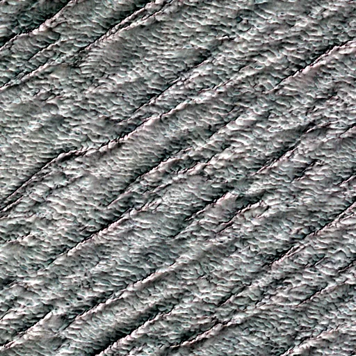

Benchmark / Near-lossless / s2-l1c-20m-6 / s2-l1c-20m-6-32
s2-l1c-20m-6-32
rub-al-khali · 2023-03-30 · sample details
Each point shows a configuration at this budget level. The line shows the best observed trade-offs. The All corpora view pools size and decode time across samples for configurations completed on every corpus with results at this level. Broken promises are listed below.
